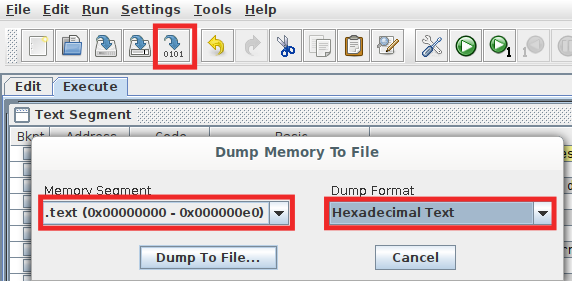
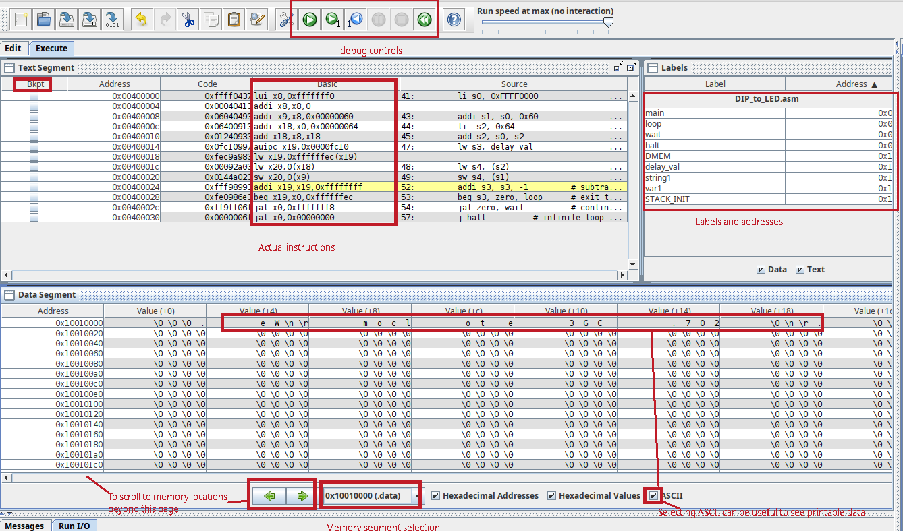
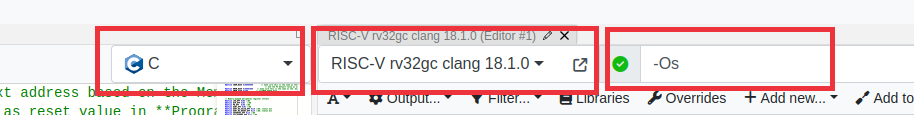

RISC-V Programming
RARS Assembler and Simulator
Use RARS assembler / simulator which can be downloaded from their GitHub repository. This requires Java to be installed in your system; Java 8 is available here.
The .jar program can be run by double-clicking it. It is portable across operating systems and needs no installation. It is a very simple and easy to use application. Linux users may need to use java -jar filename.jar - note the -jar option required to run a Java archive.
You can use RISC-V assembly sample to get started. Download it, and open with RARS - File > Open. Note : RARS assumes that SP(x2) and GP(x3) are initialized to 0x3ffc and 0x1800 respectively, and other registers are initialized to 0s. In the register file provided in the templates, only register zero (x0) is guaranteed to be 0, and others are uninitialized. You need to write a value to all registers other than x0 before you read them.
Settings > Memory Configuration > Make sure Default is selected > Apply and Close. It is also possible to select other configurations such as Compact, Text at Address 0, but needs appropriate changes in your Wrapper, ProgramCounter, and C program.
Write/modify the code as necessary. You may want to look at these pages - RARS Supported Instructions, Assembly Directives.
Run > Assemble.
Debug and see if the program runs as intended. The standard debugging options are available. You can single step, run until a breakpoint (breakpoints are set using the checkboxes next to assembled code), backstep (a cool feature which not many simulators support), pause, stop, reset.
File > Dump Memory. You can also do so by clicking the button in the toolbar as shown below. First, select the .text memory segment. Save it as Hexadecimal text with the name AA_IROM.mem. This is the instruction memory.

Do the same thing with .data too, and save it as AA_DMEM.mem, unless your program doesn't use any non-immediate constants / initialised variables at all. This is the data memory.
Some of the useful RARS controls and tiles are highlighted below.

Using Compiled Code
You can use the .C file in the Assignment 2 Optional Stuff folder as a sample. The corresponding .asm is also provided for reference. Please make sure you read the comments in the .C and .asm files.
Please note some other points below.
- To the extent possible, it is a good idea to test your algorithms (e.g., masking and shifts to deal with bytes within a word.) in a standard C compiler, making appropriate changes (e.g.,
printf()andscanf()/hardcoding to simulate actual system input and output) to run in a desktop environment. - Follow the Godbolt settings as shown.

- the newest non-trunk version should work fine. - The default Godbolt language maybe C++, change it to C. C++ compiler does stuff like name mangling which we can do without.
- Clang produces more comprehensible code than GCC, though sometimes at the expense of increased code size.
- In fact, GCC with
-Os -fwhole-programcan produce very optimised code with a flattened hierarchy (function calls removed), but can be pretty hard to make sense of. This can be useful if your processor does not supportjalfully andjalryet. In any case, do not use the trunk versions. - Typically, the only essential changes needed for the assembly code generated by Godbolt/Clang is to insert
li sp, STACK_INITinserted as the very first line. This is to set stack pointer to point to the top of DMEM initially (STACK_INIT). The stack is full-descending, so the first value is pushed toSTACK_INIT-4..datainserted just before the data declarations.- GCC generated code may require some reorganisation, as it tends to place the data segment at a place other than at the end. Also, it may place functions other than main at the beginning, which requires either moving it down, or a branch to main at the beginning of the code segment, after initialising the stack pointer.
- Do not use library functions such as
printf(). If need be, implement your own, simple versions of these functions. - Make sure that only those instructions supported by your processor are generated. Check in the RARS execute window for actual instructions.
- Check the actual number of instructions (not lines of code as some instructions are pseudoinstructions). Make sure the size is set in Wrapper
IROM_DEPTH_BITSas appropriate. e.g., should be 10 if the number of instructions is >128 and <=255. DMEM_DEPTH_BITSshould also be changed as appropriate, if you need more memory such as what you will need when you load images.- Make sure the correct memory config is selected in RARS.
- Pitfall of using larger instruction and/or data memory : your maximum clock frequency usually suffers. Bigger = slower is a fundamental law of nature that is not easy to work around.
- The first few instructions that save Callee saved registers to the stack can be deleted safely - do a sanity check to see if this is really the case nevertheless. There is no caller for
main(). - Make sure the main function code is at the beginning. Some compilers such as GCC may put this in the end, in which case you need to rearrange the functions in assembly. Our absolute bare-metal system does not have a linker/loader/startup code to start at the main if it is not in the beginning.
- Simulate the code in RARS.
- When using memory-mapped input peripherals, the corresponding address location should be modified just before the corresponding
lwis executed to simulate the data coming in from peripherals. - If you are using the counter peripheral for delay, you might want to use a smaller delay for simulation and change the code to a bigger value later. This can be changed in C code or directly in assembly (likely
lui). - Though you can't see OLED output, it is fairly easy to check the row, column, pixel colour, and pixel write signals and get a sense.
- Export the instruction and data memory as hexadecimal text, overwriting the
AA_IROM.memandAA_DMEM.memthat are added to the Vivado project. - Simulate in HDL behavioral sim, after changing the
test_Wrapperto give stimuli according to the inputs expected by your C/assembly program. Synthesize and do a post-synthesis simulation as well. - Finally, run immplementation and generate bitstream. Fingers crossed :)
Using GNU Assembler
You can use the GNU Assembler and Clang toolchain to make assembling and compiling code easier and faster. It might also be easier to script using these tools to speed up your workflow.
To set it up, you would need to install the GNU toolchain and Clang for compilation. You can do so on Linux or Windows Subsystem for Linux.
sudo apt install binutils-riscv64-unknown-elf clang
The relevant files can be found in the Assignment 2 Optional Stuff folder as a sample.